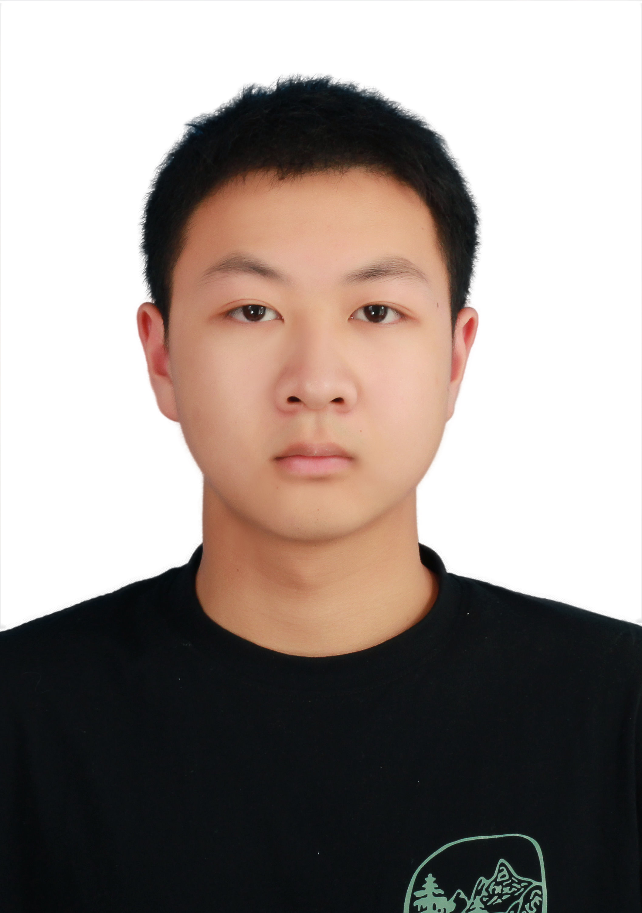

K1 Edge AI Risk Inspection Robot
Robotics · Edge AI · ROS 2A ROS 2 inspection system on the SpaceMIT K1 RISC-V platform, combining autonomous SLAM exploration, RGB-D risk perception, risk mapping, and local language-model reports.
School of Electronics and Information
Northwestern Polytechnical University
西北工业大学

A ROS 2 inspection system on the SpaceMIT K1 RISC-V platform, combining autonomous SLAM exploration, RGB-D risk perception, risk mapping, and local language-model reports.
Extended the Windows desktop overlay with remaining-context display and per-thread low-context notifications. This work builds on the upstream Codex Token Overlay project.
An educational application combining herb-learning activities, a conversational assistant, plant image recognition, and text-to-speech interaction.